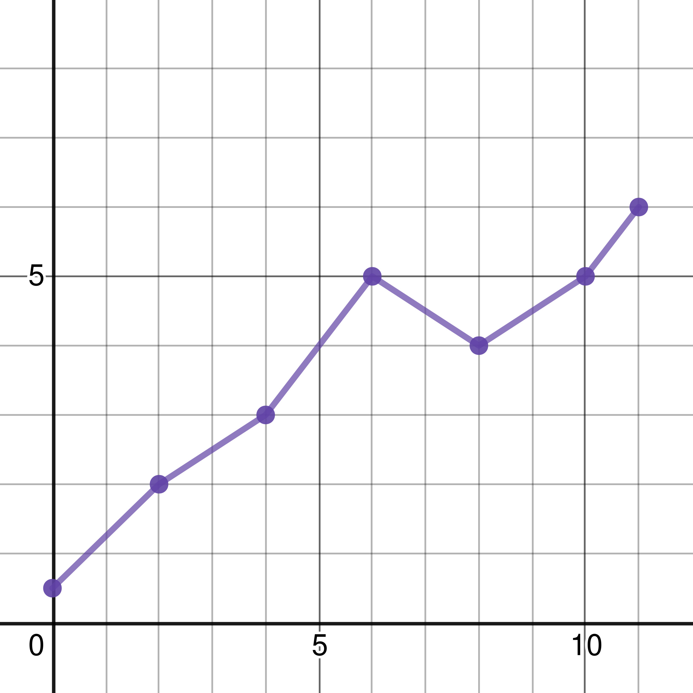

In the previous chapter, I mentioned briefly the issue of overfitting and underfitting, which I want to go over quickly in this chapter.
First of all, what is overfitting? In its simplest terms, overfitting refers to a model that has been overly fitted. This sounds kind of pointless, somewhat like saying an overreaction is an over[exaggerated] reaction, so let me further explain what I mean. Fitting a model can be thought of as finding ideal values for different variables in the network, like the weight and bias through a learning process because variables are fitted with values that help them generalize a given set of training data as well as possible to achieve the highest accuracy on a testing dataset. This is somewhat analogous to fitting a new shoe: you try out a few different sizes and see which one you like best/find most comfortable. Therefore, overly fitting a model makes the model have too ideal values. What this means is that the model is starting to generate a “bias” on the training dataset, making it classify the training dataset with unexpectedly high accuracy. Referring back to the previous analogy, this is like making a shoe that will only fit one person in the whole world. This is bad because it’s not a good marketing decision… So if we go right back to my definition, an overly fitted model will be too specific when classifying the testing dataset, which causes the model to have an unexpectedly low model accuracy. To see why, I used an example in the previous chapter which I want to make as a generalized definition below:
Overfitting
A model can overfit, which is simply where the model starts making too detailed or sophisticated assumptions on how to separate different objects.For example, a model trying to classify apples and oranges is overfitted if it classifies oranges as “an object that is orange and perfectly round” just because the training dataset consists of hundreds of examples of perfectly-round oranges.
We can tell when a model overfits if a few of the following are true:
For example, let’s say we are given a set of points on a graph, and we are to use a neural network to predict a value \(y\) for a new input value \(x\). You may instantly think of the equation \(f(x) = y\) when I assign the values to their respective variables, which is good! Neural networks are somewhat like a function given an input, that gives you an output in this sense! But, they shouldn’t exactly predict values like functions, if they did, the network must be overfitted.
This must sound vague, so let’s go ahead with an example. Let’s say we wanted to predict values for a given dataset-table below:
| \(x\) Values | \(y\) Values |
|---|---|
| 2 | 2 |
| 3 | 4 |
| 5 | 3 |
| 6 | 4.5 |
| 7 | 6 |
| 8 | 5 |
| 9 | 7.6 |
| 10 | 6 |
Figure 5-1: A dataset consisting of various inputs and outputs.
You may also like to see a visualization of it:
Figure 5-2: A visualization of the dataset given above.
Here, we see that the values we are trying to approximate show a weak positive correlation between the input and output. Therefore, we can conclude the function can be approximated. Without the use of neural networks, datasets like the above are usually approximated using a line of best fit. Wikipedia has a whole list of various algorithms to fit lines, so let’s go over one of them and see if we compare and contrast the algorithm with a neural network’s learning algorithm.
The least squares method is defined as below:
Given \((x_{1},\ y_{1}),\ (x_{2},\ y_{2}),\ ...,\ (x_{i},\ y_{i})\), find:
Given this five-step algorithm to computing a line of best fit, we can try it on our dataset above and see what it outputs!
Graphing this equation, we get:
Figure 5-3: Approximation of example dataset using the least squares method.
You might feel that this algorithm is quite complex, but after we split it into 5 steps, you’ll find it a lot easier to understand! Some readers thought that I manually calculated these values with an old-fashioned calculator, but do realize that this can be automated using programming languages! Below, I provide an example to do this in Python and Java, along with some explanations.
01 x = [2.0, 3.0, 5.0, 6.0, 7.0, 8.0, 9.0, 10.0]
02 y = [2.0, 4.0, 3.0, 4.5, 6.0, 5.0, 7.6, 6.0]
03
04 xAverage = 0
05 yAverage = 0
06
07 sum1 = 0
08 sum2 = 0
09
10 for i in x:
11 xAverage += i
12 for i in y:
13 yAverage += i
14
15 xAverage /= len(x)
16 yAverage /= len(y)
17
18 for i in range(len(x)):
19 sum1 += (x[i] - xAverage) * (y[i] - yAverage)
20 sum2 += (x[i] - xAverage) * (x[i] - xAverage)
21
22 slope = sum1 / sum2
23 inter = yAverage - slope * xAverage
24
25 print(sum1)
26 print(sum2)
27 print(slope)
28 print(inter)
29 print(xAverage)
30 print(yAverage)
Output:
30.275
55.5
0.5454954954954955
1.3531531531531535
6.25
4.7625
Process finished with exit code 0
Explanation:
x
array are all whole numbers). Line 4-5: Initialize the variables that store the average of all input and output values as two different arrays. These values are to be used later on in the program. Line 7-8: Store values for the summation equations in Step 3 of the algorithm. Line 10-13: Accomplish Step 1 in the algorithm: add all input and output values into two separate arrays. Line 15-16: Do Step 2 of the algorithm: find the average of the input and output values by dividing the summation of all values in the two arrays by the number of items in the array. Line 18-22: Do Step 3 of the algorithm and find the slope of the line of best fit by dividing the values from the two summations. Line 23: Find the y-intercept by enforcing Step 4 of the algorithm. Line 25-30: Print out the values that we are interested in.The Java example follows the same thought and step process, so I won’t go over another almost-duplicate explanation this time.
01 public class lsm {
02 public static void main(String[] args) {
03 double[] x = {
04 2.0, 3.0, 5.0, 6.0, 7.0, 8.0, 9.0, 10.0
05 };
06
07 double[] y = {
08 2.0, 4.0, 3.0, 4.5, 6.0, 5.0, 7.6, 6.0
09 };
10
11 double xAverage = 0;
12 double yAverage = 0;
13 double sum1 = 0;
14 double sum2 = 0;
15
16 for (double val : x) {
17 xAverage += val;
18 }
19
20 for (double val : y) {
21 yAverage += val;
22 }
23
24 xAverage /= x.length;
25 yAverage /= y.length;
26
27 for (int i = 0; i < x.length; i++) {
28 sum1 += (x[i] - xAverage) * (y[i] - yAverage);
29 sum2 += (x[i] - xAverage) * (x[i] - xAverage);
30 }
31
32 double slope = sum1 / sum2;
33 double inter = yAverage - slope * xAverage;
34
35 System.out.println(sum1);
36 System.out.println(sum2);
37 System.out.println(slope);
38 System.out.println(inter);
39 System.out.println(xAverage);
40 System.out.println(yAverage);
41 }
42 }
So now that we have found another way to approximate output pairs in this example, how is it related to a neural network? Firstly, a neural network with a single layer has the ability to approximate or classify in linear form, which means that training a network helps the network create a line of best fit. Therefore, you can analogically imply that multiple layers of a network would approximate functions in higher dimensions, or with a higher degree/index. This means that a multi-layer neural network is able to create more sophisticated approximations, and are therefore almost always better than single-layer networks. We want our network to create a line of best fit, because this is the most ideal way to approximate a set of data without having bias. Sometimes, you may hear news that tells you of biases in artificial intelligence and network models. This is caused by a lack of general data, which is where there isn’t enough data across all categories the network was intended to classify. For example, this is like training a network with images of cats and expecting it to recognize a dog with a high degree of accuracy. You’ve never shown the network a picture of a dog: it doesn’t know what a dog looks like, so it can’t classify them, which makes networks produce a “guessed” result, or provides one that is uncertain(perhaps \([0.57,\ 0.43]\) instead of \([0.97,\ 0.03]\)). Other times, “biased” networks are created when data is improperly shuffled or the error rate of the network just peaked on the last epoch of training. When data is improperly shuffled, the network isn’t given an adequate amount of examples of some of the things it is meant to classify or approximate. For example, this is like giving a short section of a function to the network that doesn’t entirely define the function. Or, giving more examples of cats than dogs in the training dataset, which makes it harder for the network to classify dogs. To prevent or avoid these problems, people give a more general training dataset: instead of presenting a small part of a function to the network, cover most of the function, and leave gaps in between data points; instead of giving 6000 images of cats and 4000 images of dogs in the training set, give 5000 images of each and shuffle their order. If we wanted our network to make a line of best fit, then overfitting would make the line of best fit “fit too much” on the training data.
For example, this is what would happen when a multi-layer network overfits when training to approximate the below dataset:
Figure 5-4: Graphical representation of overfitted approximations from networks.
First of all, why is this considered as overfitting? All data points are connected to each other, which means that the network is starting to “assign” values for each data point. This means that if you were to ask for an output value when \(x = 12\), you’ll almost certainly obtain an inaccurate result. It is because of this, that overfitted neural networks have a low testing and high training accuracy. Instead, we want our network to approximate somewhat like this:
Figure 5-5: A better approximation of a function by a neural network.
If you wonder how I created these graphs, visit the website Desmos. There, you can actually play around with parameters and see how they affect the graphical representation.
Above, you can see that the line doesn’t perfectly match the data points on the graph, but instead loop through them. This is the result that we want to achieve with our neural network: we don’t want our network to be too specific or too abstract. For a neural network achieving the above result, the testing accuracy should be relatively higher because the network has suggestions on what the function will look like to the left and right of the range of the training dataset.
Now, you might as well wonder: why do networks sometimes overfit? What is the cause of overfitting? The answer is actually quite simple: in Chapter 4 (Neural Networks and Learning), we talked about the various parameters like the learning rate and in the first Task, and introduced epochs. Networks are usually overfitted if they have been training over an excessive amount of epochs under a very small learning rate. Why is this? In Chapter 4, I mentioned that finding an ideal learning rate should get you more efficiently to the minimal loss or error. If we plot the error of the network over the training and testing dataset, we should find the training accuracy of the network is higher than the testing accuracy. Overfitting, on the other hand, would be like achieving the global minimum loss on the training dataset. This is not good, because the network starts being biased towards the examples in the training dataset, somewhat like familiarizing the network with training examples and telling it that all examples are the same as the ones given. Instead, we want to achieve an error rate close to but not at the global minimum loss. But quite often, that global minimum for the loss or error of a network cannot be achieved, which is why not every network overfits. Next, an excessive amount of epochs affects the accuracy a network obtains. For example, in Task 1, if you tried various other epoch numbers for the challenge, you’ll realize that you can actually get a higher accuracy by increasing the number of epochs and also decreasing the learning rate, until you get to the point where the difference is noticeable. This increase in accuracy is because the network starts taking more careful small steps, towards a minimum loss, so it is less likely to accidentally reach a higher loss. You’ll notice that the smaller your learning rate is, and the bigger your epoch number is, the closer you get to that global minimum for your training dataset, which increases the likelihood of overfitting.
So what is underfitting? It is somewhat the opposite of overfitting! Here, I’ll give a definition like I did for overfitting.
Underfitting
A model can underfit, which is simply where the model makes too general or abstract assumptions on how to separate different categories or approximate functions.For example, a model trying to classify apples and oranges is underfitted if it gives incorrect general assumptions, like saying oranges are “usually green”.
Well… I’m sure that example confused you quite a lot! So, let’s think about it: first of all, why would a model make too general or abstract assumptions to classify or regress? Second, what does this imply? To answer these questions, let’s turn to our definition of overfitting and define underfitting alongside it. Here, I provide a comparison between the two, and further define underfitting:
| Overfitting | Underfitting |
|---|---|
| Model makes too specific assumptions to regress or classify. | Model makes too abstract and often incorrect assumptions to regress or classify. |
| Training accuracy is much higher than testing accuracy. | Neither training accuracy or testing accuracy is high. |
| Because of a very low learning rate and a large number of epochs. | Because of an inadequate amount of epochs and perhaps a high learning rate value. |
| Occurs more than underfitting. | Occurs less than overfitting. |
So what does this imply? First of all, this implies that underfitting is somewhat like a model learning too less from the training dataset and overfitting is somewhat like a model learning “too much” from the training dataset. Since underfitting is caused by a high learning rate and/or inadequate amount of epochs, then this implies that the model’s weights and biases are closer to their initialized and random value than to their ideal values. Usually, models can overfit, which often results in slightly lower accuracy. But sometimes, models can underfit, which can result in even lower accuracy levels. But, why does underfitting not occur as much as overfitting? Models overfit more than underfit because operators who train models understand that the learning rate of a model has to be smaller (usually) than 0.5 or 1, and epoch numbers need to be greater than 5 at least. This means, there are certain benchmarks out there that work well to prevent underfitting in all types of network models. But, there aren’t a lot of guidelines on how to choose a learning rate that is not too small and an epoch number that is not too big. There aren’t a lot of these guidelines (for avoiding overfitting) because results aren’t consistent between different model use cases, so people end up not venturing into the unknown.
This tradeoff between accuracy and generalization ability has a sophisticated name stuck to it: bias-variance tradeoff, and is one of the many problems practitioners of data science and artificial intelligence are facing in the real world.
That’s just about all I wanted to say! Take a look at the Chapter Summary and head on to the next chapter!
Given \((x_{1},\ y_{1}),\ (x_{2},\ y_{2}),\ ...,\ (x_{i},\ y_{i})\), find: